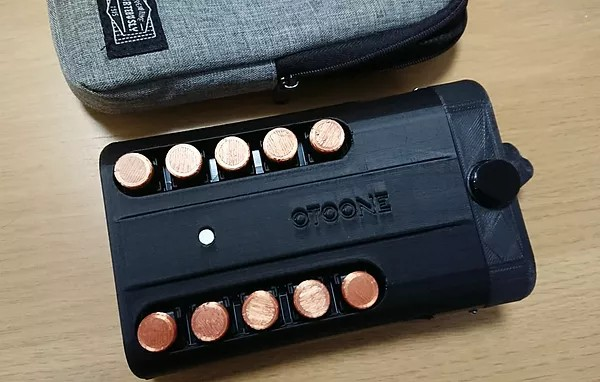

AFUUE (ウインドシンセサイザー)
超小型のウインドシンセサイザー(電子管楽器)です。
３オクターブ半の広い音域と、息による音の強弱で、感情をこめた演奏表現が可能です。

(ソフトウェア書き込み方法)
AFUUE の内蔵ソフトウェアの更新方法です。
AFUUE を PC に接続してください。
ダウンロード(zip)
上記リンクから zip ファイルをダウンロードし、解凍してください。
解凍すると AFUUE_v05 フォルダができます。フォルダ名と中身のファイル名は変えないでください（フォルダ位置は移動しても大丈夫です）
AFUUE_v05 フォルダ内の AFUUE_v05.ino をダブルクリックすると Arudino IDE が起動します。
起動しない場合は、Arduino IDE を起動して「開く」から選択してください。
(Arduino IDE がインストールされていない場合は、インストールし、ESP32 devkit を使えるようにセットアップしてください)
Arduino IDE が起動したら、(→) ボタンを押します。
数分～十数分待つと、書き込みが完了し、AFUUE が再起動します（ドー♪ と音が鳴るはずです）
以上で書き込みが完了です。
otoone.dev@gmail.com